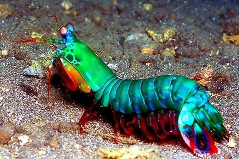
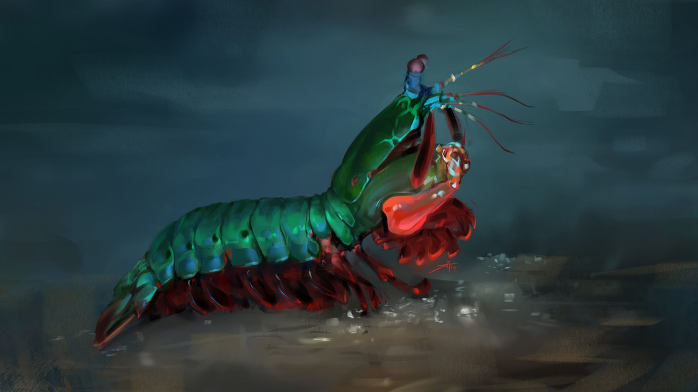

Fatos sobre o Stomatopoda
O poder dos olhos de Stomatopoda
Os crustáceos estomatópodes (camarões mantis) possuem um sistema visual incrivelmente complexo, composto por olhos compostos que contêm mais tipos de fotorreceptores do que em qualquer outro animal conhecido. O arsenal óptico do olho do camarão Odontodactylus scyllarus inclui capacidade de localização monocular, visão de cores de 12 canais, detecção de polarização linear de 2 canais e, em algumas espécies, a capacidade de detectar e analisar luz polarizada circularmente. Subjacente a esse conjunto incomparável de capacidades funcionais está uma diversificação estrutural de uma unidade fotorreceptiva básica comum a todos os olhos compostos, o omatídio. A seguir, as proezas visuais do camarão mantis são descritas no contexto das variações do design e da distribuição de seus omatídios. Camarões Mantismostra o olho do louva-a-deus de cauda escamosa, Lysiosquilla scabricauda. É composto por hemisférios superior e inferior (dorsal e ventral) separados por uma estreita faixa central. Um exame atento da superfície do olho revela que cada região consiste em fileiras paralelas e estreitamente espaçadas de facetas minúsculas nos hemisférios e outras muito maiores na faixa. Os hemisférios têm muitas fileiras de facetas, mas a banda tem apenas seis. Olhar abaixo da superfície revela que cada faceta é a ponta de uma unidade estrutural alongada, conhecida como omatídio. Todos os omatídios são dispositivos opticamente sensíveis, mas aqueles na banda são os mais complexos, mais funcionais e mais interessantes.
- Reino : Animalia
- Filo : Arthropoda
- Subfilo : Crustacea
- Classe : Malacostraca
- Subclasse : Hoplocarida
Classificação científica
Curiosidades sobre Stomatopoda
Força
São capazes de enfiar um murro a uma velocidade superior aos 80 km/h. Este é o murro mais rápido anotado de qualquer animal existente, com mais de 1500 N de força. A superfície dos seus apêndices que desferem os punhos são cobertos com uma camada extremamente densa de hidroxiopatite, disposta de uma maneira muito resistente à possibilidade de fracturar.
Agressividade
São animais perigosos de se manter em aquários pois os seus murros são capazes de partir o vidro . Mas devido à sua coloração são espécimens bonitos para se ter em colecções ou como animais de estimação. Outra desvantagem é o facto de serem predadores vorazes que podem alimentar-se doutros animais presentes no tanque ou capazes de danificar os objectos e o coral dentro do aquário. 